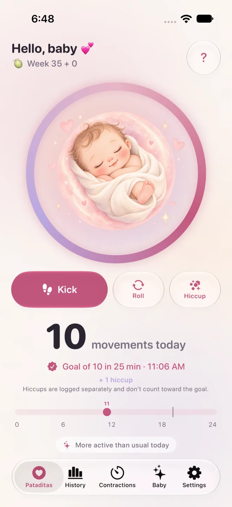

Pataditas / How to use Pataditas
How to record baby movements in Pataditas
Pataditas is a private pregnancy journal for iPhone. You record the movements you feel; the app saves the time and movement type. This guide explains the actual app workflow, not a medical counting prescription.
Record a movement in four steps
Open the movement screen
Complete or skip the optional personalization. If the Plus offer appears, close it to continue with free counting.
Log with one tap
Tap Kick, Roll or Hiccups. Each button immediately saves its own movement type. Hiccups stay in the diary but do not count toward a movement group.
Use the large illustration for kicks
A tap on the central illustration logs one kick. There is no movement mode to select and no timer to start.
Correct an accidental tap
Tap the temporary Undo option immediately after logging if you recorded something by mistake.

What the history and charts show
The free history shows the last seven days. Plus adds full pregnancy history, pattern charts and a PDF report. Comparisons use only the movements you entered; missing entries can change them.
What the 10-movement celebration means
Pataditas groups 10 logged kicks or rolls within two hours. This is not a health assessment or a universal daily target. Follow your care team’s guidance.
Your records stay private
Movement logging works offline. When iCloud is enabled, records sync through your own private iCloud account. No Pataditas account is required, and the developer cannot read your pregnancy diary.
Sources and scope
This guide is written by the app developer and has not been clinically reviewed. For health questions, use your care team’s advice. Read the NHS guidance on baby movements and Count the Kicks’ counting information.